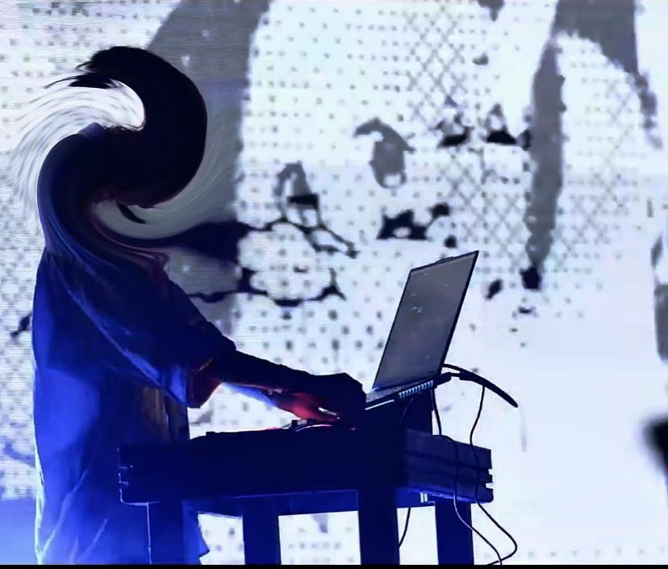

EN
Juana Molli is an audiovisual artist studying Electronic Arts at UNTREF in Buenos Aires, Argentina.
Her work spans installation design, land art, performances, and video projection. She explores the intersection
of machine-generated data and physical light encounters, using analog and digital video synthesizers, and
autonomous systems.
Molli's visuals reflect a digital post-existentialist style, inspired by error as a creative force and the
interaction between humans and new technologies.
ES
Juana Molli es una artista audiovisual que se especializa en performances, videomapping, diseño de land art y
proyecciones de video.
Actualmente estudia la Licenciatura en Artes Electrónicas en UNTREF. Está fascinada por la luz proyectada como
medio para desafiar nuestros modelos de percepción visual, dando lugar a nuevas y reimaginadas
realidades.
Molli encuentra inspiración en el error como una forma de creación, el surrealismo y la interacción del ser
humano con las nuevas tecnologías.